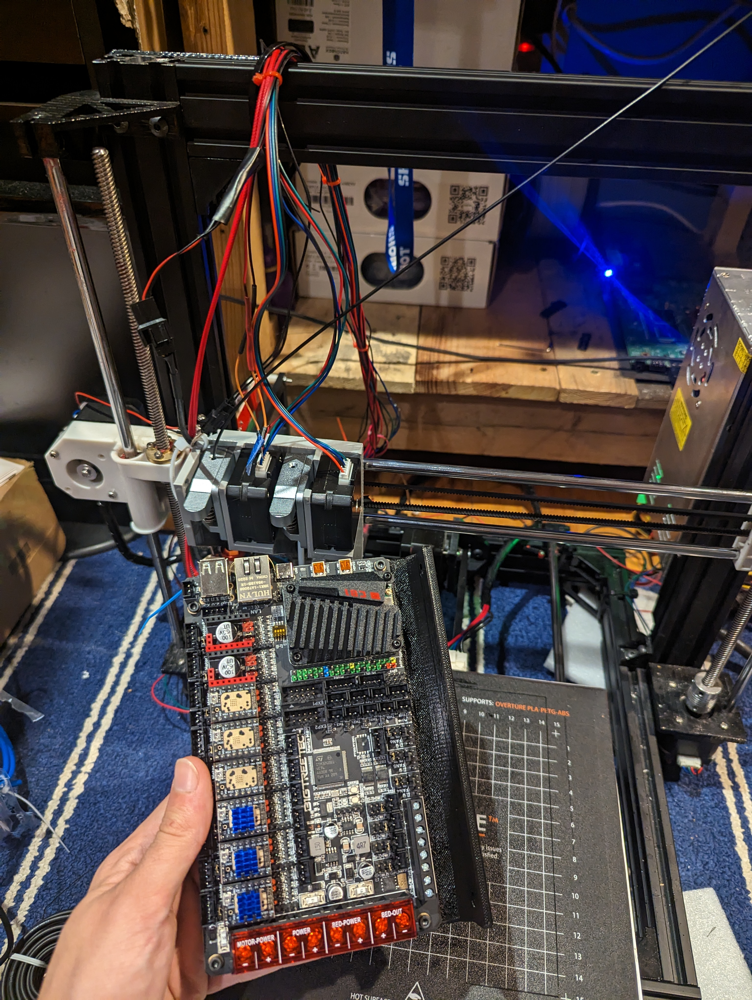
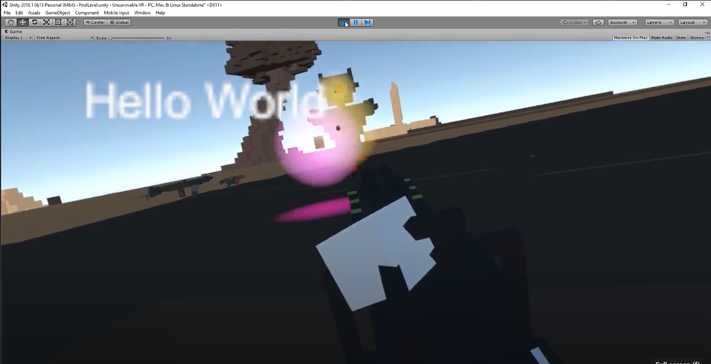

My name is Pasquale Popolizio. Ever since I can remember, I have been taking things apart myself to fix them, while being irresistibly drawn into learning how they work along the way. It started with changing the batteries in my toys, fixing my RC cars, and wiring my own circuits with alligator clips and that has led me to learn how to do things like build computers, program microcontrollers, 3D print inventions, and write software.
I frequently design and 3D print any gizmo or gadget that can be simply made out of plastic. I have designed many 3D objects, formally known as things, that vary in use. This includes applications such as electronics enclosures, mechanisms, tools, high temperature, and automotive. Many of my larger projects are great examples of iterative design. Trial and error. It is important to test and learn from your mistakes. 
 I have a burning passion for game development. I have always loved videogames and have a fascination for the breathtaking worlds that they portray. These worlds and the lessons they have taught have helped mold me as a child. My final project for AP Computer Science gave me a taste of game development, and a new calling. I have been working on my own projects ever since. I am proud of my virtual reality project and my first person shooters, as well as my bare-bones Unity WebGL first person sandbox.